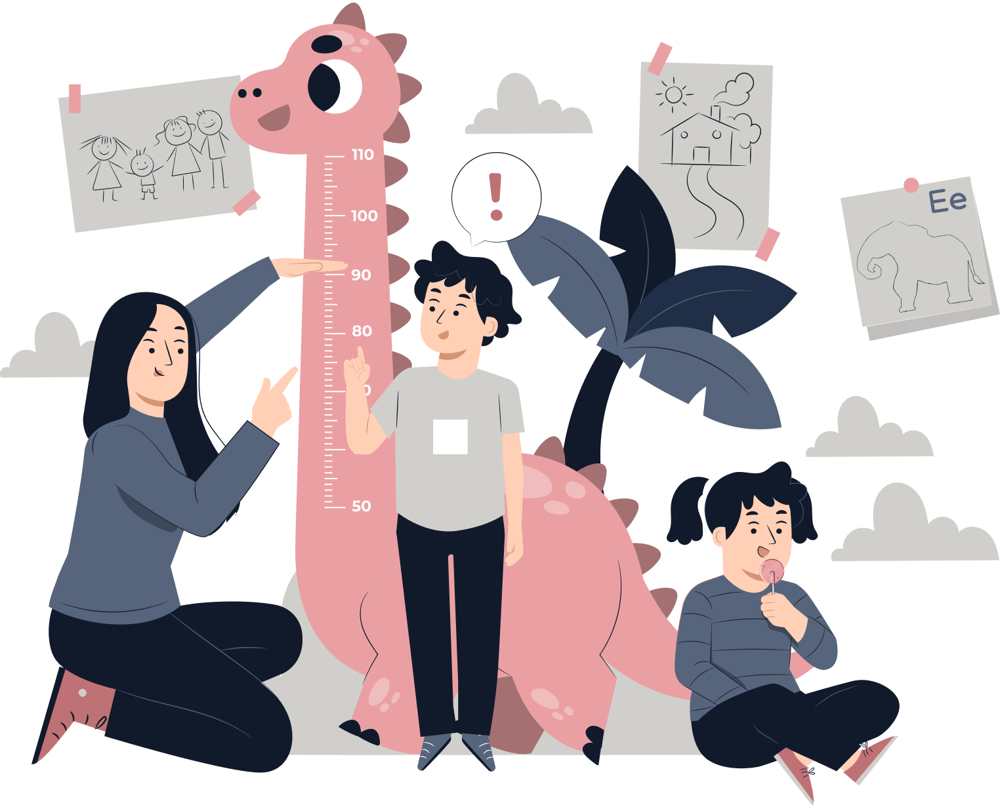

Deteksi Dini Status Pertumbuhan Standar WHO
Mengetahui kondisi balita berdasarkan tinggi badan dan usia, sehingga orang tua bisa mengambil tindakan sejak dini.
Setiap data punya makna. Melalui platform ini, kami akan membantu Anda melacak, menganalisis, dan mencegah terjadinya stunting pada balita sebagai upaya mewujudkan tumbuh kembang balita yang lebih baik.

Balita yang
Telah Terdata
Balita Kondisi
Normal
Balita Kondisi
Pendek
Balita Kondisi
Sangat Pendek
StunTrack merupakan platform digital yang dirancang untuk membantu orang tua memantau tumbuh kembang balita secara mandiri. Dengan memanfaatkan teknologi, StunTrack mendukung deteksi dini risiko stunting serta membantu orang tua memperoleh informasi yang lebih mudah dipahami.
Dengan mengisi kuesioner, Anda akan mendapatkan:
Untuk melihat kembali hasil analisis yang telah Anda isi sebelumnya,
silahkan masukkan nama lengkap balita, tanggal lahir balita, dan tanggal lahir orang tua.
Mengetahui kondisi balita berdasarkan tinggi badan dan usia, sehingga orang tua bisa mengambil tindakan sejak dini.
Mengetahui faktor yang meningkatkan maupun menurunkan risiko stunting pada balita beserta rekomendasi pencegahannya.
Memantau perkembangan tinggi badan balita dari waktu ke waktu yang membantu orang tua melihat tren pertumbuhan.
Mengakses kembali hasil analisis sebelumnya kapan saja untuk memantau perkembangan balita secara berkelanjutan.
Menyimpan hasil analisis dengan mudah untuk keperluan konsultasi ke posyandu, puskesmas, atau tenaga kesehatan.
Menerima hasil analisis dan informasi penting langsung ke email tanpa perlu membuka aplikasi kembali.
Temukan jawaban dari berbagai pertanyaan yang sering ditanyakan.
StunTrack membantu Anda memantau kondisi pertumbuhan balita berdasarkan indikator tinggi badan menurut usia, memahami faktor-faktor yang berpengaruh terhadap risiko stunting, serta memperoleh rekomendasi pencegahan yang sesuai. Seluruh hasil analisis disajikan melalui visualisasi yang informatif dan mudah dipahami.
StunTrack dapat digunakan secara gratis tanpa biaya oleh siapa saja. StunTrack bukan merupakan aplikasi resmi pemerintah, melainkan platform berbasis riset yang dikembangkan untuk mendukung upaya pencegahan stunting melalui pemanfaatan teknologi informasi. Platform ini dapat dimanfaatkan oleh masyarakat maupun instansi terkait sebagai sarana pemantauan dan edukasi mengenai risiko stunting.
Ya. Data Anda disimpan secara aman dan tidak akan dibagikan kepada pihak lain tanpa persetujuan. Apabila Anda ingin menghapus data, permintaan penghapusan dapat diajukan melalui tautan verifikasi yang dikirimkan ke email terdaftar. Setelah verifikasi dilakukan, seluruh data terkait akan dihapus secara permanen dari sistem.
Kuesioner dapat diisi oleh orang tua atau wali yang merawat balita berusia 0 hingga 60 bulan (5 tahun). Setiap akun dapat mendaftarkan hingga 4 balita pada setiap pengisian dengan menggunakan satu alamat email yang sama.
Riwayat penyakit gondok pada orang tua menjadi salah satu indikator yang berkaitan dengan kondisi kekurangan yodium. Kekurangan yodium dapat berpengaruh terhadap perkembangan janin dan pertumbuhan balita. Informasi ini digunakan sebagai salah satu faktor dalam analisis risiko stunting untuk membantu memahami faktor-faktor yang mungkin berpengaruh, bukan untuk tujuan lain.
StunTrack dapat digunakan untuk memantau pertumbuhan balita berusia 0 hingga 60 bulan (5 tahun) berdasarkan standar pertumbuhan WHO. Apabila balita telah melewati batas usia tersebut, balita tidak dapat melakukan pengisian analisis baru. Namun, riwayat analisis yang telah dilakukan sebelumnya tetap tersimpan dan dapat dilihat sebagai catatan pertumbuhan balita.
Anda dapat melakukan pengisian ulang kuesioner dengan data yang benar. Data sebelumnya pada usia pengukuran yang sama akan otomatis diperbarui dan digantikan oleh data terbaru yang Anda masukkan.
Tidak perlu. Jika email Anda sudah terdaftar, data balita yang sebelumnya telah diinput akan otomatis muncul setelah proses verifikasi. Anda hanya perlu melengkapi atau memperbarui data terbaru tanpa harus mengulang seluruh pengisian dari awal.
Anda dapat menggunakan fitur Cek Riwayat Analisis dengan memasukkan nama lengkap balita, tanggal lahir balita, dan tanggal lahir orang tua untuk mengakses kembali riwayat pengisian serta melihat perkembangan pertumbuhan balita melalui grafik dari waktu ke waktu.
Bisa. Anda dapat menghubungi tim StunTrack melalui formulir kontak yang tersedia pada halaman utama dengan mencantumkan nama, email, subjek, dan pesan yang ingin disampaikan. Pesan tersebut akan diteruskan ke email resmi StunTrack, dan Anda akan menerima konfirmasi bahwa pesan telah berhasil dikirim.
Ketahui sejak dini apakah balita Anda berisiko mengalami stunting. Isi kuesioner sekarang dan ambil langkah awal untuk memantau pertumbuhannya agar berkembang secara optimal.
Cegah StuntingKami siap membantu anda dengan sepenuh hati! Silakan hubungi kami melalui kontak berikut untuk mendapatkan informasi lebih lanjut atau bantuan yang anda butuhkan.
Jalan Veteran, Malang 65145
Fakultas Sains, Teknologi dan Matematika, Universitas Brawijaya
+62 813-2970-7103
+62 813-2510-8545
stuntingtracking@gmail.com
Punya masukan, saran, pertanyaan seputar layanan kami atau bahkan membutuhkan bantuan? Isi formulir dibawah ini, kami siap membantu dan akan segera menanggapi pesan anda.